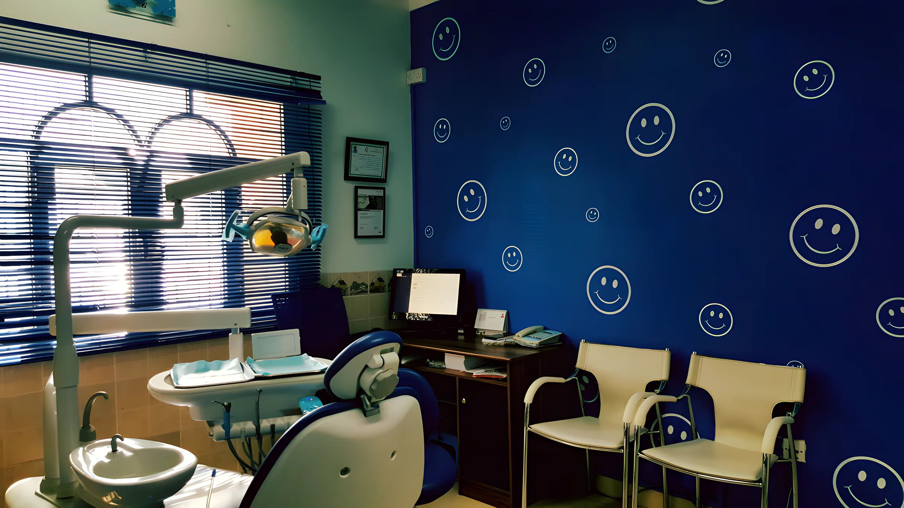
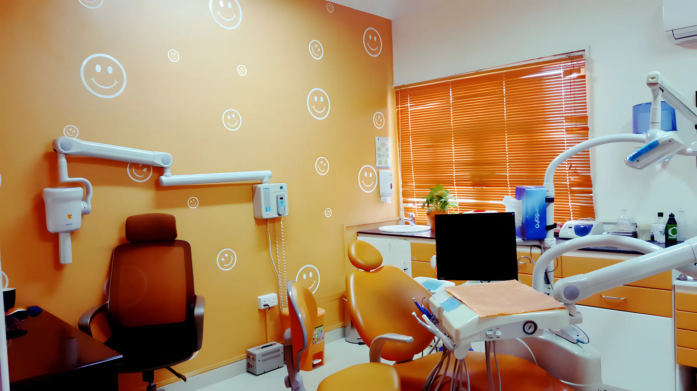
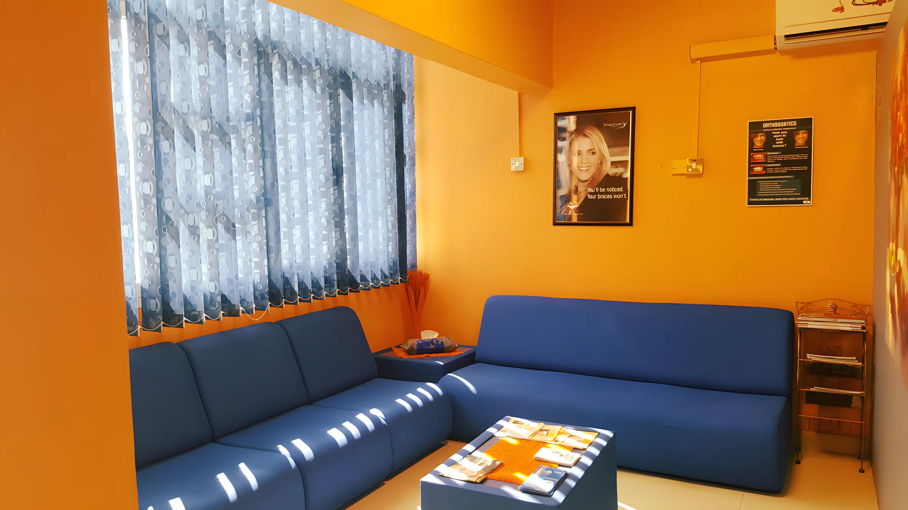

العلاجات
كل ما نقدمه في العيادة بشرح بسيط. لست متأكداً مما تحتاجه؟ راسلنا على واتساب أو اتصل بنا ونحجز لك موعد فحص.

01الفحص الدوري وأسنان الأطفال
أغلب مشاكل الأسنان لا تؤلم في بدايتها، ولذلك قد لا تنتبه لها إلا بعد أن تسبب ضرراً. ننصح بفحص كل ستة أشهر، وأكثر إذا كنت أكثر عرضة لمشاكل الفم.
الفحص الدوري
نفحص كل سن واللثة، ونتأكد من عدم وجود أنسجة غير طبيعية، ونتابع عند الأطفال نمو الفم والأسنان.
للأطفال
- علاج الفلورايد
- حشوات السد الوقائية لأسطح المضغ في الأسنان الخلفية
- حافظات المسافة: إذا سقط سن لبني مبكراً، تحفظ مكانه حتى لا تميل الأسنان وتتزاحم

02الحشوات وعلاج العصب والتيجان
عندما يكون السن مسوّساً أو مكسوراً أو متآكلاً، نعيد بناءه لتعود تعض وتمضغ براحة. وكثيراً ما تخف حساسية الأسنان بعد وضع الحشوة المناسبة.
ما نقدمه
- حشوات فضية وحشوات بلون السن
- علاج العصب (قناة الجذر): تنظيف القنوات وتشكيلها وإغلاقها حتى لا يعود الألم
- الوتد والقلب لإعادة بناء السن قبل التاج
- التيجان والجسور الثابتة لتعويض سن أو أكثر
- أطقم الأسنان الجزئية والكاملة

03تجميل الأسنان
علاجات تختارها لتحسين شكل أسنانك وابتسامتك. الدكتورة حفصة حاصلة على شهادة في Lumineers وتصاميم Cerinate للابتسامة.
العلاجات
- تبييض الأسنان من بقع التدخين والقهوة والشاي
- القشور الخزفية (الفينير) لسد الفراغات وإخفاء الكسور والتصبغات
- تيجان خزفية بالكامل بدون معدن
- حشوات وترميمات تجميلية بلون السن
- تصميم الابتسامة: تقييم شامل وخطة قد تجمع أكثر من علاج
مجوهرات الأسنان
حلية صغيرة من الكريستال أو الذهب تُلصق على السن في نحو 15 دقيقة، بدون حفر وبدون ألم، ويمكن إزالتها أو تغييرها في أي وقت.

04تقويم الأسنان
الأسنان المعوجة أو المتزاحمة وسوء الإطباق يمكن علاجها في أي عمر. التقويم مع الأستاذ الدكتور سانديب شيتي، أخصائي التقويم لدينا، ويمكن دفع تكلفة التقويم بالتقسيط المريح.
الخيارات
- تقويم ثابت معدني أو خزفي
- تقويم لساني مخفي خلف الأسنان الأمامية
- تقويم شفاف متحرك (Invisalign) مصمم لك
- أجهزة وظيفية للأطفال في مرحلة النمو
- المثبتات بعد انتهاء العلاج
المدة
يستغرق العلاج عادة نحو سنتين وقد يطول، والكبار يحتاجون غالباً وقتاً أطول قليلاً من الأطفال. نشرح لك ما تتوقعه في حالتك عند الاستشارة.
05اللثة وحساسية الأسنان
نزيف اللثة أو تورمها غالباً أول مراحل أمراض اللثة، وعلاجها مبكراً سهل.
ما نقدمه
- تنظيف الجير وتلميع الأسنان
- علاج أمراض اللثة حسب درجتها
- علاج حساسية الأسنان بعد تحديد السن المسبب
- واقيات فم مفصلة للرياضة
- واقيات ليلية لصرير الأسنان وألم الفك
06علاج الأسنان بالليزر
ليزر الأسنان شعاع ضوئي دقيق جداً يزيل الأنسجة أو يشكلها بدقة.
لماذا الليزر
- في بعض الإجراءات بدون حفر وبدون تخدير
- نزيف أقل أثناء العلاج
- بكتيريا أقل في جيوب اللثة والتسوس
- تعافٍ أسرع وأريح غالباً
07زراعة الأسنان
الزرعة تعوض جذر السن المفقود ويُثبت فوقها سن جديد، فتملأ الفراغ وتحافظ على شكل الوجه.
بعد الزراعة
نتابعك بفحوصات دورية حتى تلتئم الزرعة، عادة خلال شهر إلى أربعة أشهر حسب حالتك.
بعد العلاج
ملخص تعليمات العناية التي نعطيك إياها في العيادة. إذا قلقت من أي شيء، اتصل بنا.
بعد خلع السن
- لا تمضغ لمدة ساعتين أو حتى يزول التخدير.
- لا تمضمض في يوم الخلع، ولا تستخدم المصاصة ولا تبصق بقوة حتى تبقى الجلطة مكانها.
- كمادة ثلج 20 دقيقة ثم راحة 20 دقيقة خلال أول ست ساعات.
- من اليوم التالي مضمضة لطيفة بماء دافئ وملح 2–3 مرات يومياً لمدة أسبوع.
- أكل لين أول 48 ساعة، وبدون تدخين.
- اتصل بنا إذا استمر النزيف أو زاد.
بعد علاج العصب
- لا تأكل ولا تشرب نصف ساعة حتى تتماسك الحشوة المؤقتة.
- لا تعض على شيء صلب حتى تُركب الحشوة الدائمة أو التاج.
- ركّب الحشوة الدائمة أو التاج خلال شهر.
- بعض الألم لمدة 2–3 أيام طبيعي. اتصل بنا إذا سقطت الحشوة المؤقتة.
بعد الحشوة
- الحشوة البيضاء تتصلب فوراً، والفضية تبقى لينة 24 ساعة فامضغ على الجهة الأخرى.
- قد تستمر بعض الحساسية للحار والبارد أسابيع قليلة ثم تخف.
- إذا شعرت أن الإطباق مرتفع بعد زوال التخدير، اتصل بنا لتعديله.
بعد التبييض
- لمدة 48 ساعة: بدون قهوة أو شاي أو مشروبات غامقة أو أحمر شفاه ملون.
- بدون تدخين 48 ساعة حتى لا يعود اللون.
- بدون معجون أو غسول ملون 48 ساعة.
بعد الزراعة
- بدون تدخين، وحافظ على نظافة المكان.
- مضمضة لطيفة بماء دافئ وملح من اليوم التالي.
- كمادات ثلج يومين، وأكل لين في اليوم الأول.
- اتصل بنا إذا كان هناك تورم أو ألم غير عادي بعد خمسة أيام.